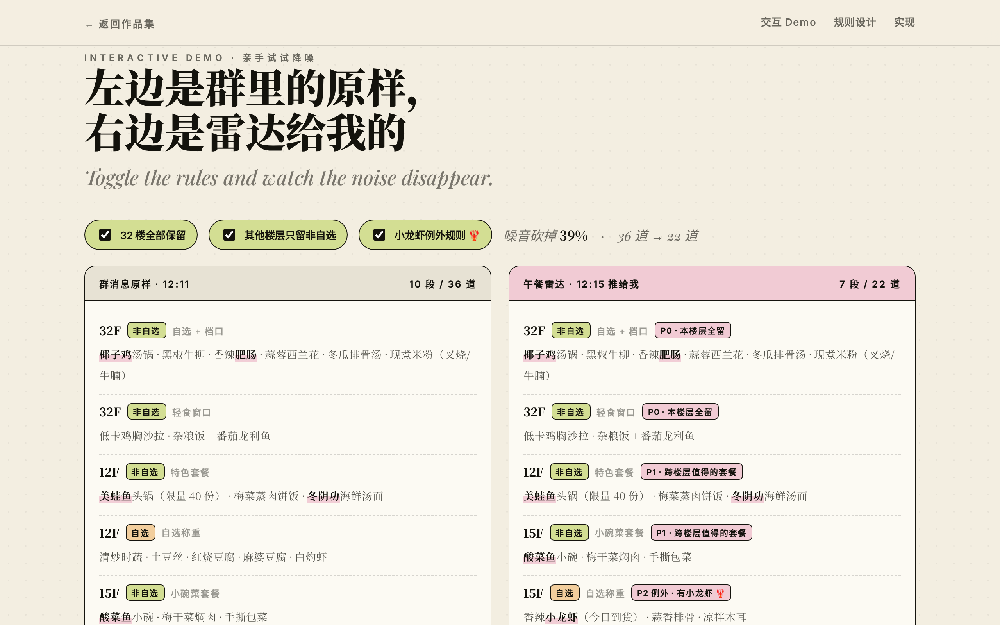
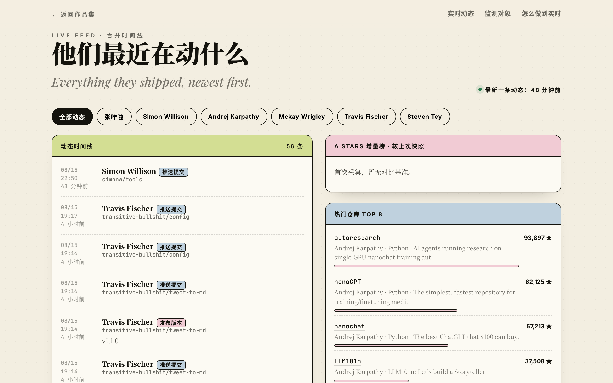
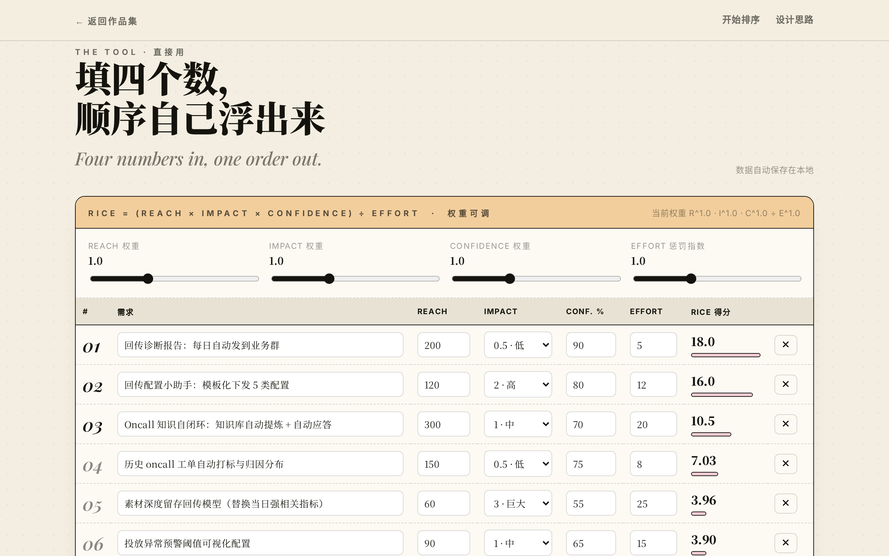

01
午餐雷达
Lunch Radar · 飞书 Agent Skill

Products that quietly run themselves.
我是冯本爽，中山大学计算机科学与技术本科 27 届，现在字节跳动 UG-中国用户增长做策略产品实习生。 白天把「策略 + AI」落成能跑的自动化闭环，晚上把生活里的小麻烦也做成产品。
下面这几个东西都在线跑着：能自己发消息的午餐雷达、每 3 小时自动更新的博主雷达、给 PM 用的优先级罗盘。
A strategy brain that ships.
我的工作大多长在一条链路上：把「靠人盯」的事变成「系统自己会做」的事。 在字节负责广告回传方向，做过回传自动化 Agent 从需求定义到上线推广的全流程，把配置和 oncall 排查从「人工对账」升级成「Agent 辅助」； 也做过 oncall 知识自闭环——让知识库自己收集、自己排序、自己回答，解决率提升约 19pp。
在科大讯飞和中国电信，我更多在做增长机制设计与数据链路：裂变激励、埋点漏斗、节假日客流预警闭环， 习惯用「指标卡点 → 机制假设 → A/B 验证」的方式推进，而不是先做完再解释。
所以这个作品集里没有长篇简历，只有我自己会天天用的小产品： 它们都很小，但每一个都有明确的痛点、明确的触发时机、和明确的「不打扰」原则。
Good products remove a decision, not add a dashboard.
Four small things that solve real annoyances.



需求池里十几条都「很重要」，排期会上全靠嗓门。把直觉换成一张可以吵架的表，五分钟出结论。
国际 AI 绘画工具在国画领域「文化失真」、看不懂专业技法。把创作与修复做进同一个工具箱，给爱好者和文博机构各一条路。
Four habits behind every small product here.
午餐雷达的答案不是「做个菜单页」，而是 12:15 和 12:30 这两个时间点。时机对了，功能可以很轻。
七层楼菜单只留三行；博主动态只留增量。默认「不打扰」，例外规则（比如小龙虾）才值得被写死。
数据靠定时任务自己抓、页面靠 Pages 自己发。工作里做 Agent 的那套「人工对账 → 系统兜底」，在生活里同样成立。
每个作品都是一天内可用的最小版本，再按真实使用反馈迭代——上线才是需求调研的开始。